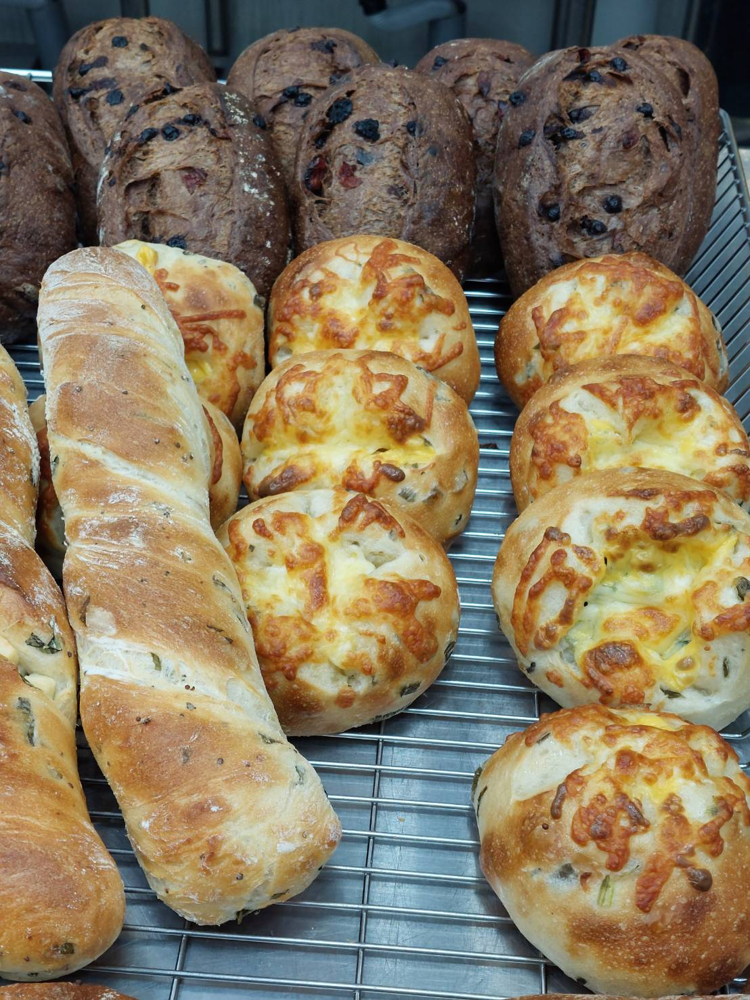
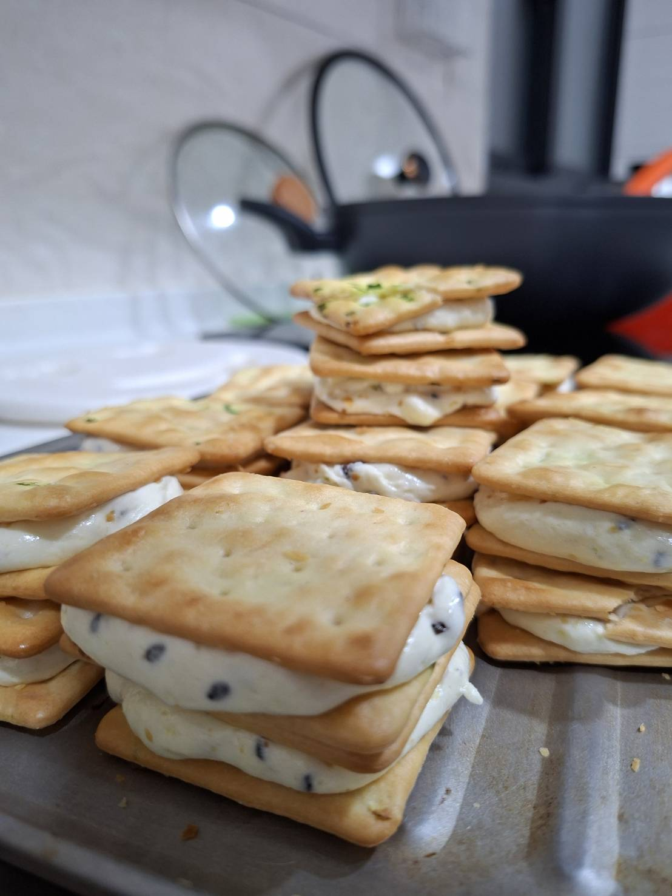
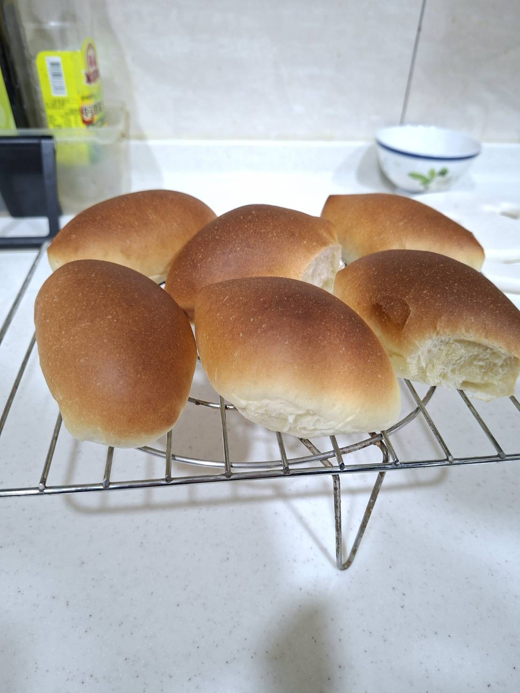

關於本站
歡迎光臨本站。
這裡是介紹手工製作的麵包種類的網站。
※未經許可，請勿擅自複製轉載。
麵包種類介紹
●歐式麵包

是一種源自歐洲、以主食為定位的麵包，通常特點是低糖、低油、少蛋或無蛋，適合健康飲食的人食用。
● 蘇打餅牛軋糖

結合鹹香蘇打餅與軟Q奶香牛軋糖的經典台灣伴手禮
● 小餐包

經典的輕食選擇，以口感鬆軟、尺寸精緻著稱，適合做為早午餐或餐前麵包，建議冷凍保存，加熱後食用。
烘焙師介紹

- 暱稱 ：
- YOZI
- 職業 ：
- 烘焙師
- mail ：
- yozi@wda.gov.tw
- Web ：
- https://tcnr.wda.gov.tw